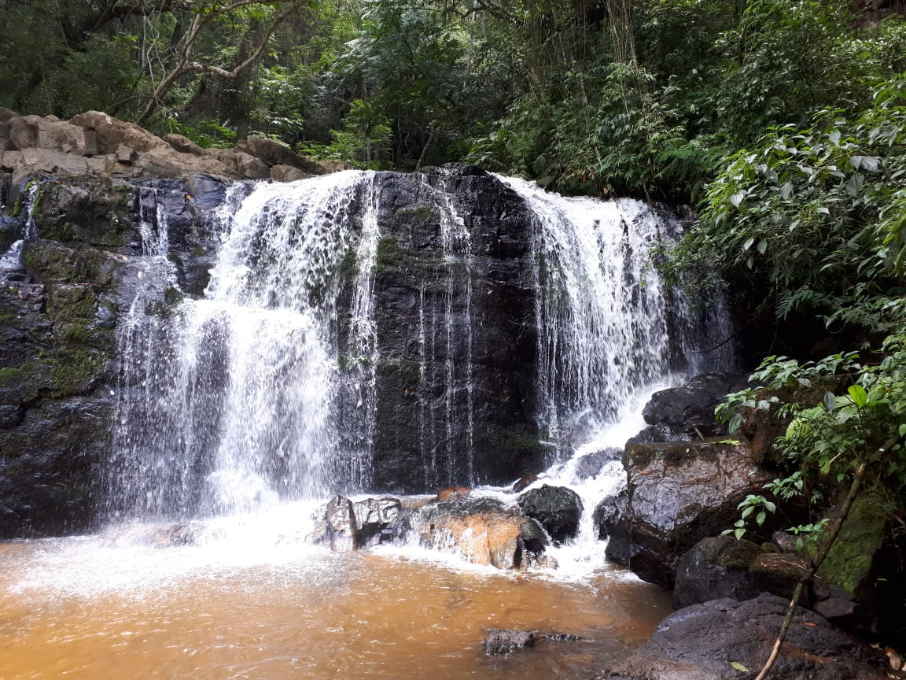

Fazenda Montanhas do Japi

A propriedade é data do século XVIII, já foi acompamento Jesuíta, produtora de uvas e desde 1970 até hoje em dia a fazenda é produtora de eucalipto e grande parte foi tombada com a mata de transição de Mata Atlântica para Cerrado. O espaço conta com uma experiencia maravilhosa de conforto e contato com a natureza.
Para mais informações, acesse:https://www.montanhasdojapi.com/
Avenida Luiz Gobbo, 5650 - Santa Clara - Jundiaí-SP
Hotel Brisa do Japi

O Hotel Brisa do Japi se encontra no município de Cabreuva, se encontra à 35km de Jundiaí. O hotel fica perto da Serra do Japi é possui uma vista maravilhosa para a serra, um belo pôr do sol, tranquilidade e uma comida totalmente deliciosa.
Para mais informações, acesse:https://www.hotelbrisadojapi.com.br/
Av. Pascoal Santi, 285 - Vilarejo Distrito Jacaré - Cabreúva - SP
Base Ecológica da Serra do Japi

Base Ecológica da Serra do Japi é um centro de ciências que apoia pesquisas, ensino ecologico e atividades de educação ambiental. A trilha é realizada somente com monitoramento dos guias.
Para mais informações, acesse: https://serradojapi.jundiai.sp.gov.br/institucional/base/
Avenida Brasil Tãmega s/n – Jundiaí-SP
Cachoeira Morangaba
A cachoeira Morangaba fica localizada na Serra do Japi, é um ótimo passeio para quem gosta de ter contato com a natureza.
Estrada Serra do Japi, Jundiaí - SP